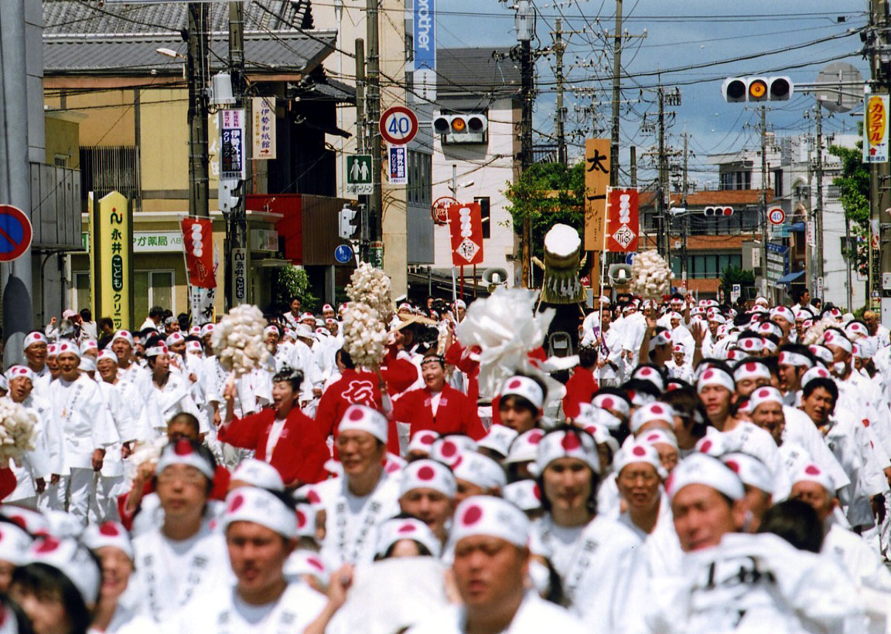
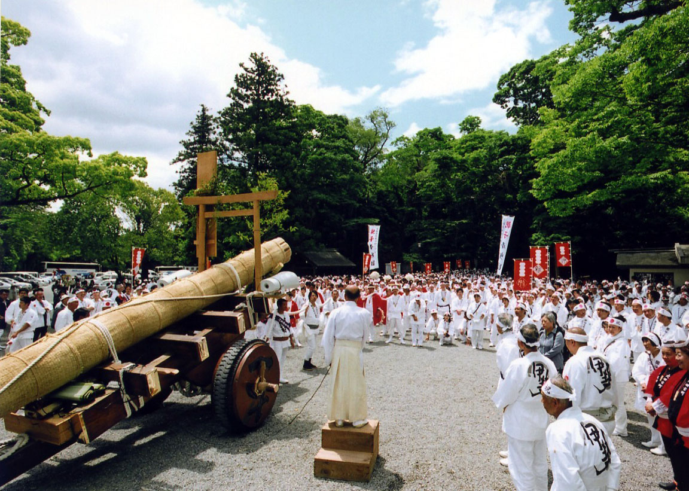
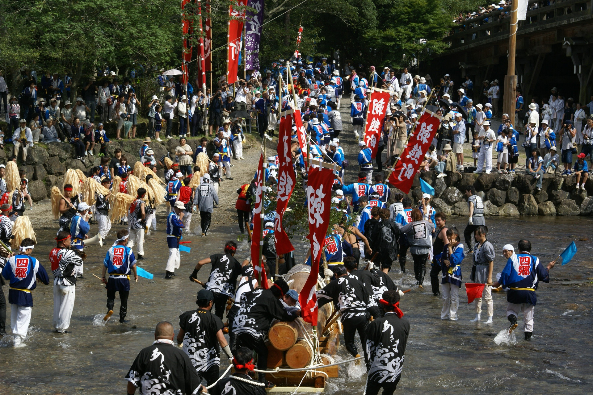
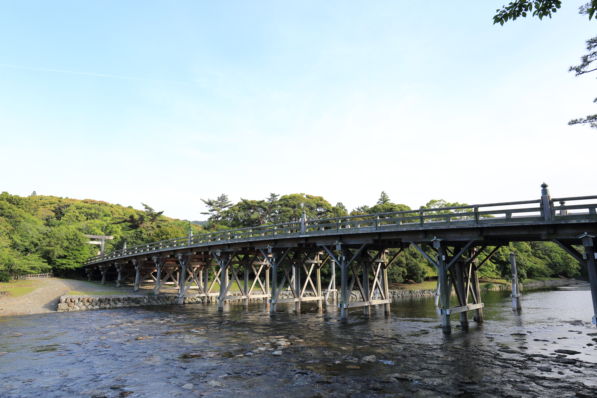
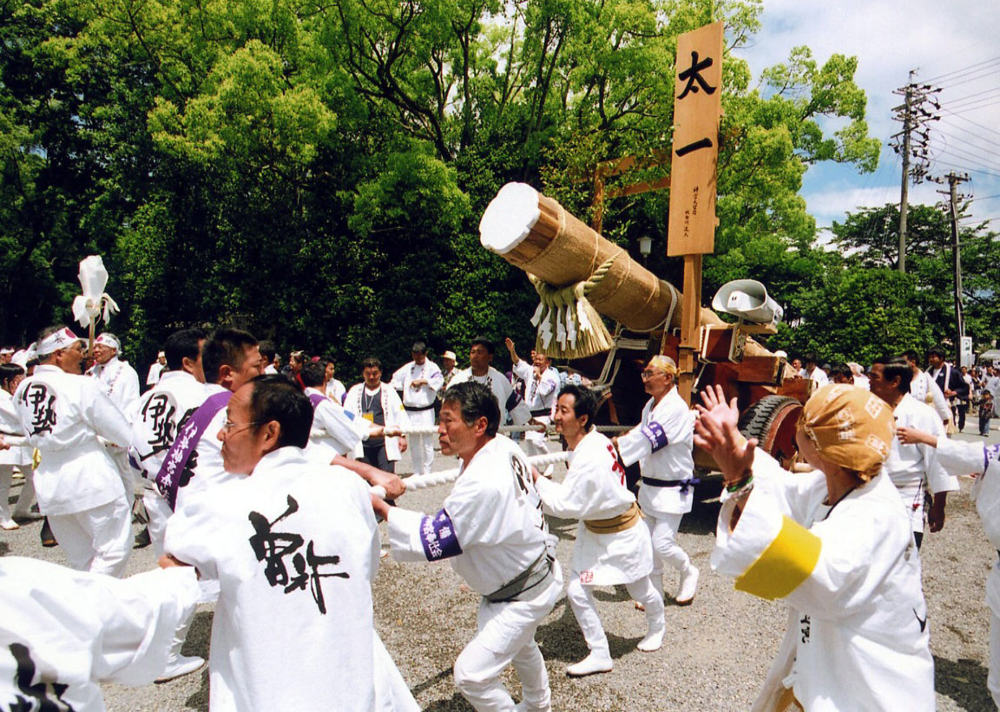
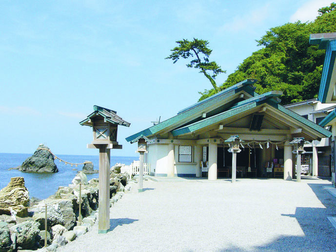
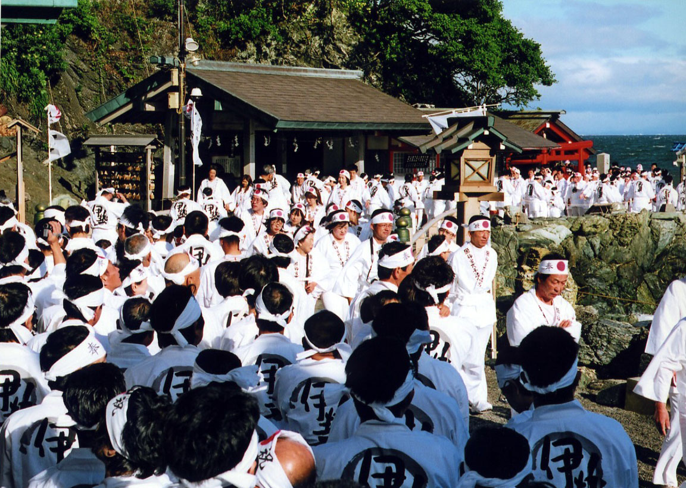

第六十三回神宮式年遷宮
令和9年 お木曳行事
2027年5月15日（土）・16日（日）
お知らせ
2026.9.1 最新情報は、随時こちらでお知らせします。
お木曳行事について

ABOUT OKIHIKI
「お木曳」とは
「お木曳行事」は、伊勢神宮の式年遷宮に用いられる御用材を、 神域へ奉曳する伝統ある民俗行事です。
二十年に一度の式年遷宮に伴って行われ、 長い歴史の中で、その伝統が世代を超えて受け継がれてきました。
お木曳行事は、伊勢のまちに受け継がれてきた、 式年遷宮に関わる大切な民俗行事の一つです。

KAWABIKI / OKABIKI
御用材を神域へ
第63回神宮式年遷宮では、令和9年5月から7月に 第二次の御木曳行事が予定されています。
内宮では川曳、外宮では陸曳によって御用材を神域へ曳き入れます。 全国の崇敬者が奉仕できる貴重な機会とされ、 今回、財団は外宮奉曳に参加します。
お木曳行事・式年遷宮について詳しく知る
お木曳行事や第六十三回神宮式年遷宮についての 詳しい情報は、各公式サイトをご覧ください。
63

JINGU SHIKINEN SENGU
第六十三回神宮式年遷宮
式年遷宮は、二十年に一度、社殿をはじめ御装束・神宝などを新しくし、 大御神に新宮へお遷りいただく神宮の大切なお祭りです。
第63回は令和15年秋の「遷御の儀」に向けて、 令和7年から8年余りの歳月をかけ、祭典と行事が執り行われます。
01
二十年に一度
式年遷宮は長い歴史の中で受け継がれ、 平成25年の第62回まで、約1300年にわたり繰り返されてきました。
02
令和15年秋へ
第63回神宮式年遷宮は、 令和15年秋の「遷御の儀」に向けて、 令和7年から関連する祭典と行事が進められています。
03
令和9年のお木曳行事
令和9年5月から7月には第二次のお木曳行事が予定され、 全国の崇敬者が奉仕できる貴重な機会とされています。
財団創立100周年記念事業
今回のお木曳行事について

MORALOGY 100th ANNIVERSARY
公益財団法人モラロジー道徳教育財団は、 創立100周年記念事業の一環として、 令和9年のお木曳行事に参加します。
幅広い年代の皆様とともに、 心を一つにして奉曳に臨みます。
一本の綱に心を合わせて御用材を曳く奉仕を通して、 創立100周年の節目に、世代を超えて同じ体験を分かち合う機会とします。
開催概要
財団創立100周年記念事業として、 第六十三回神宮式年遷宮のお木曳行事に参加します。
日程
令和9年（2027年）
5月15日（土）～16日（日）
※2日間にわたって実施します。
開催地
三重県伊勢市
奉曳
外宮奉曳
参加予定人数
約1,600名
宿泊
伊勢・鳥羽・二見周辺
一部、最終調整中の内容があります
詳細な行程、集合場所、集合時間等については、 決定後に本ページで順次お知らせします。
参加を希望される方へ
参加を希望される方は、 所属ブロックまで直接お問い合わせください。
募集期間
令和8年9月1日（火） ～ 令和9年1月31日（日）
※定員に達し次第、締め切ります。
参加資格
10歳以上80歳以下の
個人維持員およびそのご家族
※小学生は小学4年生以上を目安とします。
参加費
45,000円
35,000円
※食費・宿泊費等を含みます。
※2027年5月16日時点で40歳以下の方に限ります。
参加にあたっての主な条件
- 2日間の全日程に参加できること
- 約2kmの歩行・奉曳・参拝を、 特別な支援なしで行えること
- 団体行動および係員の指示に従えること
参加申込について
参加を希望される方は、所管ブロックまで 直接お問い合わせください。
申込方法や今後の手続きについては、 各ブロックからご案内します。
行事日程
現時点での予定です。 詳細な時刻や移動方法は、決定後に順次更新します。
1日目
5月15日（土）
結団式・浜参宮・宿泊
集合・結団式
五十鈴川駅周辺に集合し、 結団式を行う予定です。
二見へ移動
結団式終了後、 バスで二見方面へ移動します。
浜参宮
二見興玉神社にて浜参宮を行う予定です。
宿泊施設へ移動
鳥羽・二見・伊勢周辺の 各宿泊施設へ移動します。
2日目
5月16日（日）
お木曳行事・外宮特別参拝・内宮参拝等
宿泊施設を出発
宿泊施設ごとに時間を分けて、 外宮方面へ移動します。
お木曳行事
係員の案内に従い、 奉曳位置に整列して奉曳を行います。
外宮特別参拝
お木曳行事終了後、 外宮で特別参拝を行う予定です。
昼食・内宮参拝等
昼食後、内宮周辺へ移動し、 参拝等を行う予定です。
終了・移動
内宮周辺から 五十鈴川駅方面へ移動する予定です。
日程・時刻は現在調整中です
宿泊施設、番車、交通状況等により、 出発時刻や行程が異なる場合があります。 最新情報は決定後に本ページでお知らせします。
浜参宮について

HAMASANGU
奉曳に先立ち、心身を清める
お木曳行事に奉仕するにあたり、 二見興玉神社で浜参宮を行う予定です。
浜参宮は、神宮参拝や神事への奉仕に先立ち、 心身を清めるために行われるものです。
本行事では、5月15日の結団式後に二見へ移動し、 浜参宮を行ったうえで宿泊します。 翌16日のお木曳行事に向けて、心を整える大切な時間です。
※当日の時間や移動方法など、詳細については 決定後に改めてご案内します。

浜参宮の流れ
バス降車
↓二見興玉神社へ徒歩移動
↓御祓い
↓参拝
↓バス乗車場所へ移動
よくあるご質問
参加にあたって、 よくお問い合わせいただく内容をまとめています。
参加を希望する場合、どこに申し込めばよいですか？
参加を希望される方は、 所管ブロックまで直接お問い合わせください。
募集期間はいつまでですか？
募集期間は、 令和8年9月1日（火）から 令和9年1月31日（日）までです。 ただし、定員に達し次第締め切ります。
参加できる年齢に条件はありますか？
10歳以上80歳以下の 個人維持員およびそのご家族が対象です。 小学生は小学4年生以上を目安とします。
1日だけ参加することはできますか？
1日のみの参加はできません。 2日間の全日程に参加できることが 条件となります。
どのくらい歩きますか？
参加条件として、 約2kmの歩行・奉曳・参拝を、 特別な支援なしで行えることが求められます。
集合場所からの移動や参拝等を含めると、 当日は一定量の歩行があります。
どのような服装で参加しますか？
奉曳当日は全身白装束で参加します。 指定の法被・帯・鉢巻を着用し、 白シャツ、白ズボン、 白足袋または白い靴をご用意ください。
着替える場所はありますか？
奉曳当日は着替え場所の用意はありません。 あらかじめ奉曳に参加できる服装で集合してください。
雨の場合は、どのような雨具を使いますか？
雨具は白または透明のカッパをご用意ください。 奉曳時は傘を使用できません。
体調が悪くなった場合はどうすればよいですか？
体調不良を感じた場合は無理をせず、 奉曳を中止して近くの係員へお申し出ください。
集合場所や集合時間はいつ分かりますか？
宿泊施設や番車等によって異なるため、 詳細は決定後に本ページおよび参加者向け案内で お知らせします。
参加費はいくらですか？
一般の参加費は45,000円です。 青年の参加費は35,000円です。 ※青年割引は、2027年5月16日時点で満40歳以下の方が対象です。
お問い合わせ
参加申込・行事に関するお問い合わせ
所管ブロックまで
直接お問い合わせください。